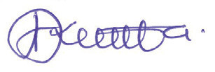

vii

Student’s Book Form Two
Acknowledgements
The Tanzania Institute of Education (TIE) would like to acknowledge the contributions
of all organisations and individuals who participated in designing and developing
this textbook.
In particular, TIE wishes to thank the University of Dar es Salaam (UDSM), Institute
of Finance Management (IFM), College of Business Education (CBE), Mkwawa
University College of Education (MUCE), Barbro Johansson Secondary School,
Kibasila Secondary School, Nyamtukuza Secondary School, Morogoro Secondary
School, Nyangao Secondary School, Kambangwa Secondary School, School Quality
Assurance (SQA) Department, Teachers’ Colleges and Secondary Schools. Besides,
the following individuals are acknowledged:
Writers:
Mr Simon E. Mangesho (UDSM), Mr Gabriel D. Chubwa & Mr
Mwesiga S. Kabigumila (TIE), Mr January J. Timanywa (Retired),
Ms Amina H. Makwaia (Kambangwa Secondary School), Mr
Boniface E. Massawe (Kibasila Secondary School), Mr Anania
J. Mngano (Nyamtukuza Secondary School), Mr Joseph C.
Kapyunka (Morogoro Secondary School) & Mr Kubali E. Nsemwa
(Nyangao Secondary School)
Reviewers
Mr Gabriel D. Chubwa (TIE) & Mr January J. Timanywa (Retired)
Editors:
Dr Hamis Sinde (IFM), Dr Lilian S. Mlay (CBE), Dr Francis G.
Kilowoko (MUCE – Language), & Mr Omary A. Kisambo (Babro
Johansson Secondary School)
Designers:
Mr Harry A. Robert & Ms Rehema H. Maganga (TIE)
Coordinator:
Mr Gabriel D. Chubwa (TIE)
TIE also appreciates the contribution of the secondary school teachers and students
who participated in the trial phase of the manuscript. Likewise, the Institute would like
to thank the Ministry of Education, Science and Technology for facilitating the writing
and printing of this textbook.

Dr Aneth A. Komba
Director General
Tanzania Institute of Education